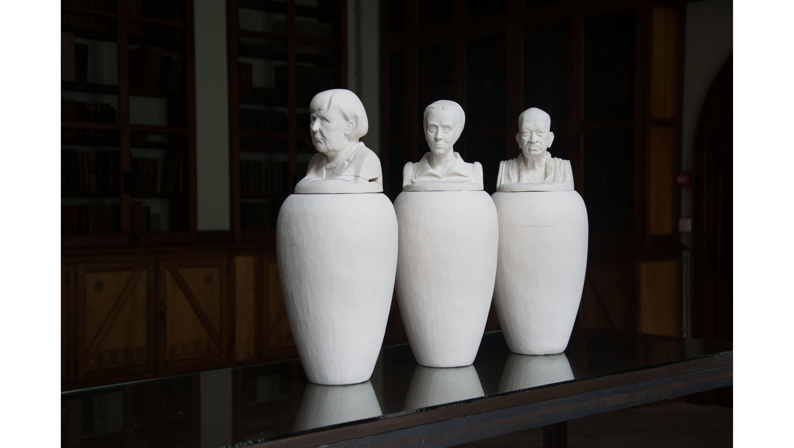

Canopen zijn Oud-Egyptische grafvazen die gebruikt werden om de organen van een gemummificeerde in te bewaren. Ze werden afgesloten met een deksel waarop de overledene was afgebeeld, of een god die gerelateerd was aan de inhoud van de urn. Op de canope stond doorgaans een (tover)spreuk of een bede.
Angela Merkel
gefragmenteerd vers van een hymn aan Inanna / Ishtar door Enheduanna, hogepriesteres van Nanna, dichter en oudste auteur gekend bij naam
Zij leefde in Ur, Mesopotamië, 2285 – 2250 v. C.
Judith Shakespeare, zoals beschreven door Virginia Woolf in A Room of One’s Own
“Let me imagine, since facts are so hard to come by, what would have happened had Shakespeare had a wonderfully gifted sister, called Judith, let us say. ... she was very young, oddly like Shakespeare the poet in her face, with the same grey eyes and rounded brows … who shall measure the heat and violence of the poet’s heart when caught and tangled in a woman’s body?”
éénwoordsgedicht van Aram Saroyan, NY City, VS, 1943 A. C.
Bhaktivedanta Prabhupada, oprichter van het ISKCON (International Society for Krishna Consciousness, ofwel de Hare Krishna’s), spiritueel leider
Vrij onbekend zijn Prabhupada’s zeer misogyne, racistische en homofobe uitspraken, alsmede zijn geloof in Arische superioriteit en zijn daaruit voortkomende waardering voor kolonisatie en ‘grote leiders’ zoals Adolf Hitler.
resterend fragment van een gedicht van Sappho
Zij leefde op Lesbos, Griekenland, 630~612 – 570 v. C.
Canopen zijn Oud-Egyptische grafvazen die gebruikt werden om de organen van een gemummificeerde in te bewaren. Ze werden afgesloten met een deksel waarop de overledene was afgebeeld, of een god die gerelateerd was aan de inhoud van de urn. Op de canope stond doorgaans een (tover)spreuk of een bede.
Angela Merkel
gefragmenteerd vers van een hymn aan Inanna / Ishtar door Enheduanna, hogepriesteres van Nanna, dichter en oudste auteur gekend bij naam
Zij leefde in Ur, Mesopotamië, 2285 – 2250 v. C.
Judith Shakespeare, zoals beschreven door Virginia Woolf in A Room of One’s Own “Let me imagine, since facts are so hard to come by, what would have happened had Shakespeare had a wonderfully gifted sister, called Judith, let us say. ... she was very young, oddly like Shakespeare the poet in her face, with the same grey eyes and rounded brows … who shall measure the heat and violence of the poet’s heart when caught and tangled in a woman’s body?”
éénwoordsgedicht van Aram Saroyan, NY City, VS, 1943 A. C.
Bhaktivedanta Prabhupada, oprichter van het ISKCON (International Society for Krishna Consciousness, ofwel de Hare Krishna’s), spiritueel leider
Vrij onbekend zijn Prabhupada’s zeer misogyne, racistische en homofobe uitspraken, alsmede zijn geloof in Arische superioriteit en zijn daaruit voortkomende waardering voor kolonisatie en ‘grote leiders’ zoals Adolf Hitler.
resterend fragment van een gedicht van Sappho
Zij leefde op Lesbos, Griekenland, 630~612 – 570 v. C.